I've been to many places around Brazil. For those that missed Geography 101, Brazil has 5 main regions and 26 states
plus a Federal District. If you open up a map, you'll see a very small square spot at the very center. That's the Federal District,
and that's where I live. Feel free to wave hello.
Other than that, I've been to 15 other states and 4 of the 5 regions. The only one left is the North region
(that's where the Amazon Rainforest is) and the reason for that is: 1. I hate the combination heat+humidity and 2.Mosquitos.
Here are some pictures. There aren't many because I'm a more "appreciate the experience" kind of guy and I forget to take them.
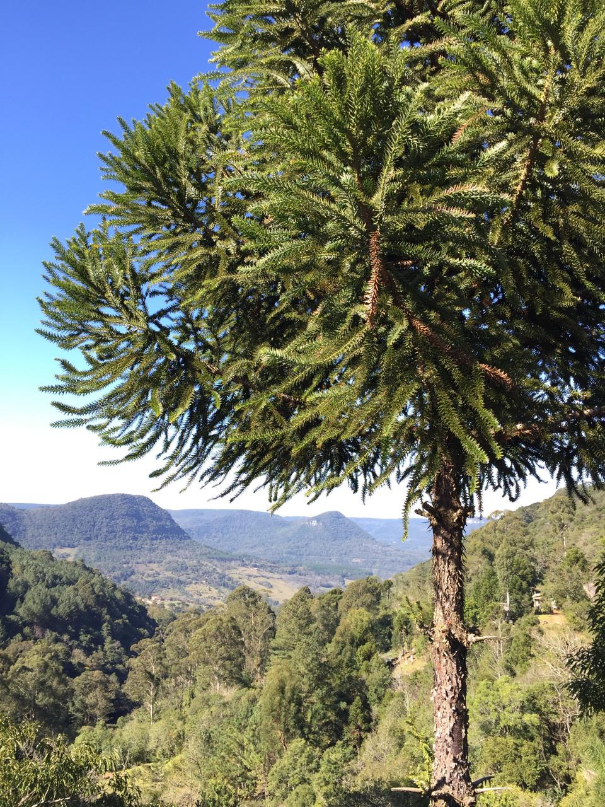The view of Brazil's south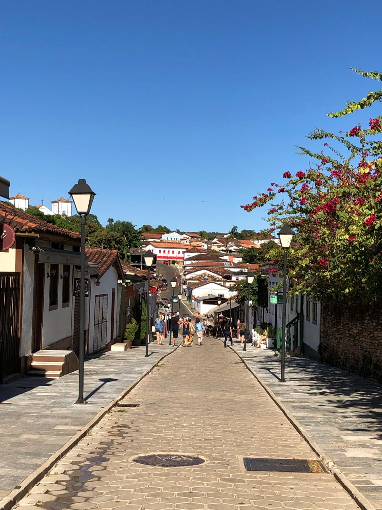The very adorable city of Paraty, RJ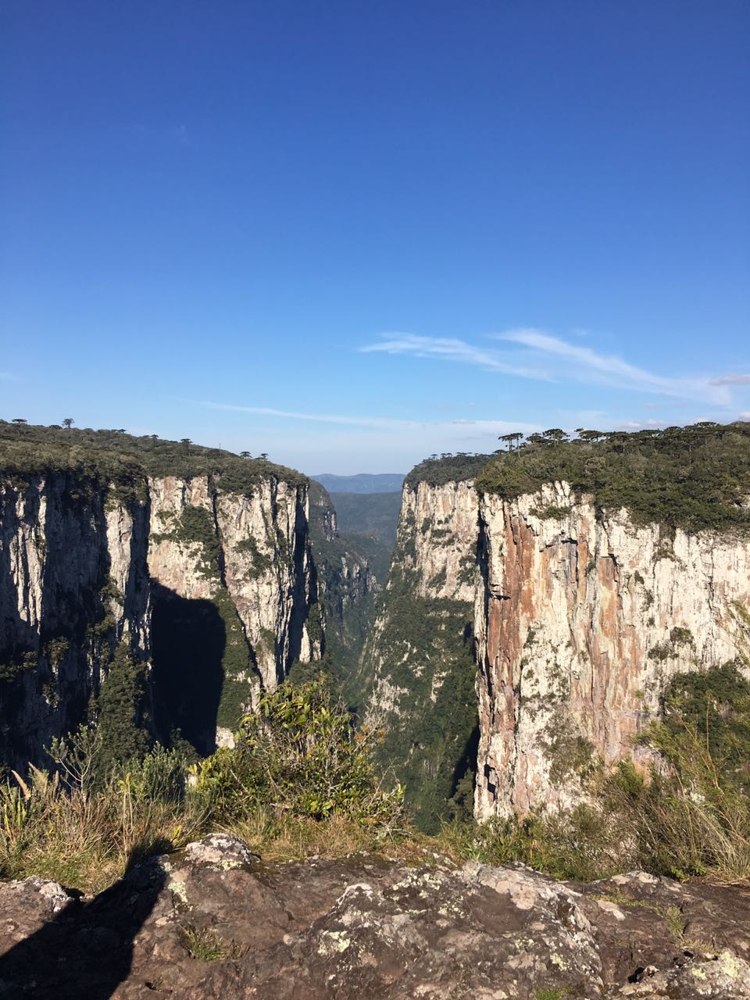Canyons? We have em'
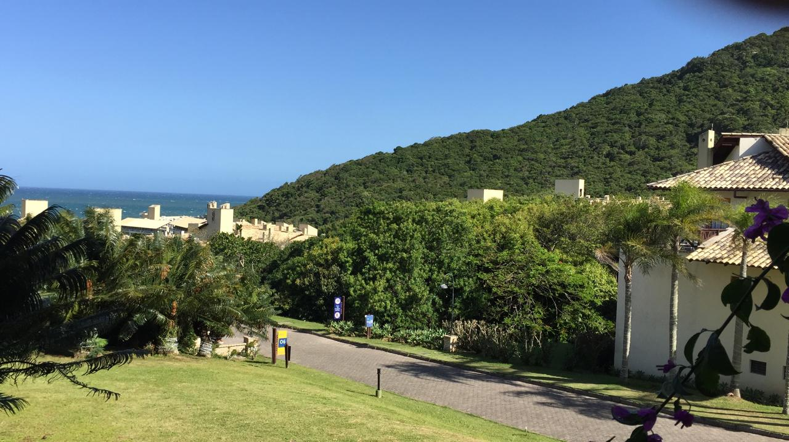Costão do Santinho Beach and natural park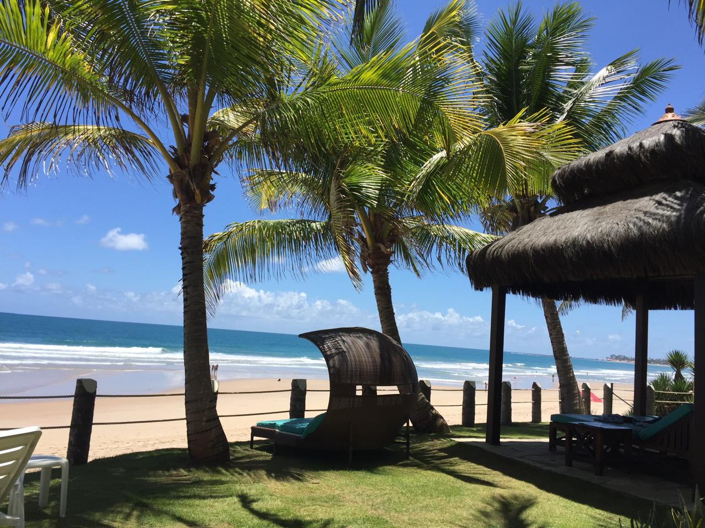A relaxing beach at Porto de Galinhas
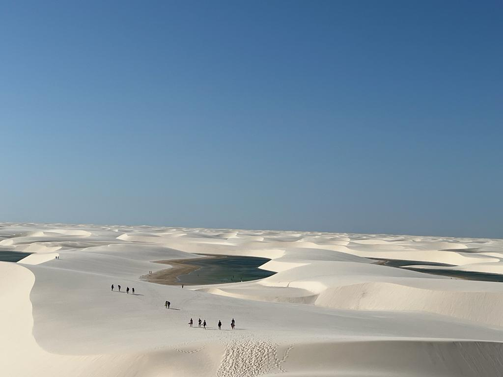The alien view of 'Lençóis'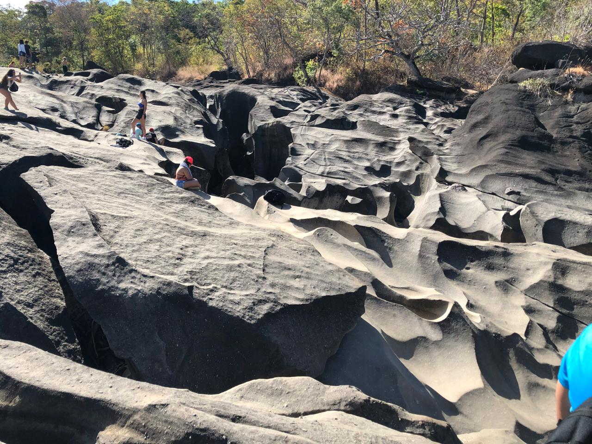A totally valid patch of lunar terrain at Moon Valley
Around Latin America
Other countries I have visited in South and Central America:
Argentina
Paraguay
Mexico
Haiti
Jamaica
Honduras
From these I only have a picture of Costa Maya, Mexico:
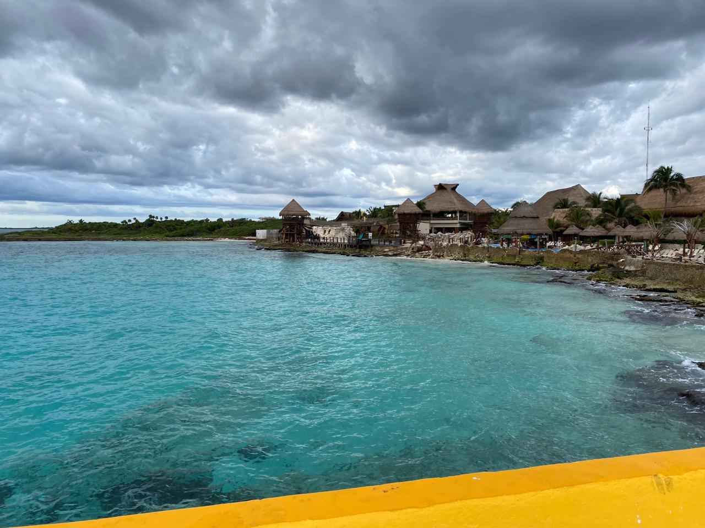
Around North America
I lived in the USA for some time as a child, but I also participated in a United Nations Simulation back in 2018, in
Washington, DC. While there, we took some time to visit New York, also. As always, here's a couple of pictures I took:
This is where the president livesStatue of Abraham Lincoln
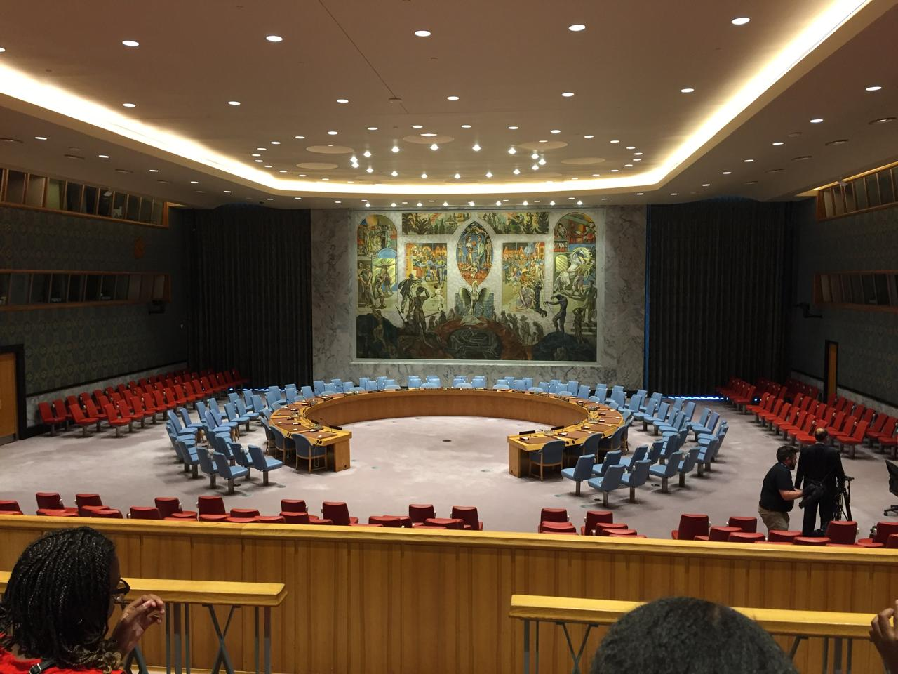
A view of the inside of the United Nations HQ
Europe
A few years ago I traveled to Europe and visited Italy, Spain and France.
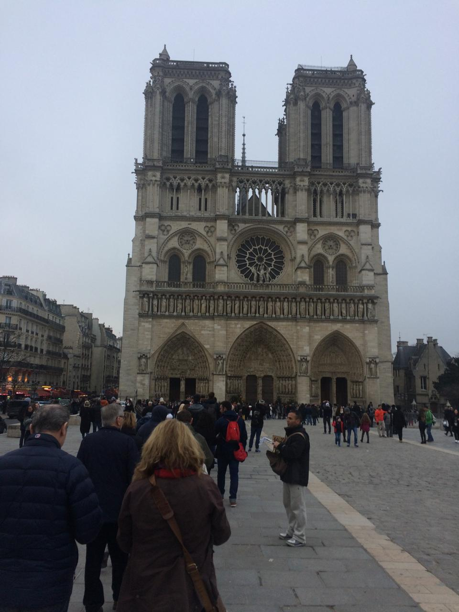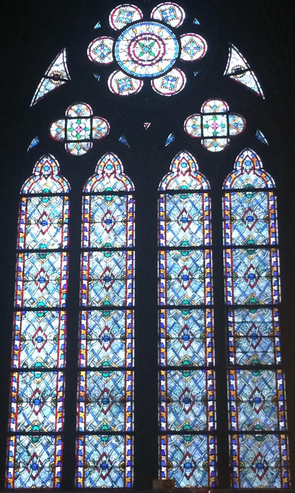
The Notre Dame had very beautiful glass mosaic windows
View of the main entrance of the Vatican Museum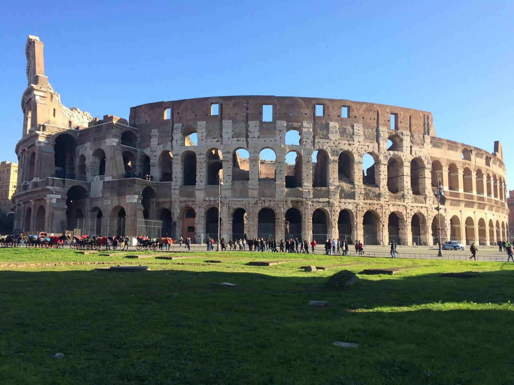The Colosseum
Japan
Currently, I'm living in Japan. Before settling in Tokyo, I traveled across some different cities going west,
like most tourists do.